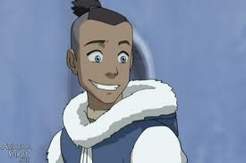

Sokka was a Water Tribe warrior of the Southern Water Tribe and the son of Chief Hakoda and Kya. Following the death of his mother and his father's leave for war, Sokka was raised by his grandmother Kanna along with his younger sister Katara.
Hakoda left along with all of the other men in his tribe to fight the Fire Nation when Sokka was a young boy. Despite his desire to join his father, Sokka was not permitted to accompany the men on the mission and was left behind. As there were no other teenage boys in the tribe, Sokka was the oldest male in the South Pole and, therefore, left as the leader of the tribe. He assumed responsibility for the tribe, haplessly training children to be future warriors, until his sister discovered an Air Nomad named Aang frozen in an iceberg. When he learned that Aang was the Avatar, he was at first skeptical that a child could really save the world. As he and his sister helped Aang on his quest, he began to believe that Aang really was the only hope for peace in the world.
Despite his inability to bend, Sokka became the strategist of the group, constantly trying to prove himself to be a great warrior like his father. He attempted to train the younger children of the Southern Water Tribe in fighting. Sokka was also the "matter of fact" guy in the group and did not believe in spirit magic, as he openly mocked it. His leadership skills improved during his travels with the Avatar, culminating with his masterminding the plan for the invasion of the Fire Nation on the Day of Black Sun. His humor and his ability to organize and plan became imperative to the group on their travels. By the conclusion of the Hundred Year War, Sokka became a master swordsman and a great warrior like his father.